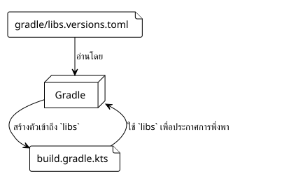
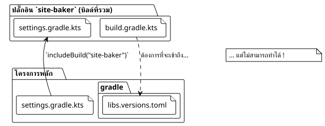

บทความที่ 5 : การผจญภัยของ libs.versions.toml ที่แชร์
เผยแพร่เมื่อ 27 September 2025
บทนำ
ในการแสวงหาของเราเพื่อสร้างปลั๊กอิน`site-baker`, เราได้พยายามที่จะรักษาฐานโค้ดที่สะอาดและเป็นศูนย์กลาง. หนึ่งในแนวทางปฏิบัติที่ดีที่สุดในระบบนิเวศ Gradle สมัยใหม่คือการใช้แคตตาล็อกของเวอร์ชั่น(libs.versions.toml) เพื่อจัดการกับการพึ่งพา. แต่เกิดอะไรขึ้นเมื่อโครงการของคุณมีความซับซ้อนมากขึ้น เช่นสร้างคอมโพสิตที่ซึ่งบิลด์อิสระ (ปลั๊กอินของเรา) ต้องถูกรวมเข้ากับอีกอย่างหนึ่ง
นี่เป็นที่ซึ่งการผจญภัยของเราได้เลี้ยวเข้าสู่เส้นทางที่ไม่คาดคิด. พวกเราต้องการปลั๊กอินของเรา`site-baker`, ซึ่งเป็นโครงการ Gradle ในตัวมันเอง ใช้แคตาล็อกเวอร์ชั่นเดียวกันกับโครงการหลักของเรา บทความนี้ ซึ่งเป็นบทที่ห้าในซีรีส์ของเรา อธิบายว่าเราได้แก้ไขปัญหานี้อย่างไร
รายการเวอร์ชัน (libs.versions.toml) : การเตือน
ไฟล์`gradle/libs.versions.toml`เป็นฟีเจอร์ของ Gradle ที่ช่วยให้คุณสามารถรวบรวมเวอร์ชันและพิกัดของไลบรารีที่ใช้ในโครงการของคุณได้. โดยทั่วไปจะถูกจัดโครงสร้างออกเป็น 4 ส่วน:
-
[versions]`ตั้งค่าอาเลียสสำหรับหมายเลขเวอร์ชั่น (ex:`kotlin = "1.9.20") -
[libraries]`กำหนดให้เป็นชื่อแทนของการขึ้นต่อกันทั้งหมด โดยใช้เวอร์ชั่นที่กำหนดไว้ข้างต้น (ตัวอย่างเช่น`kotlin-stdlib = { module = "org.jetbrains.kotlin:kotlin-stdlib", version.ref = "kotlin" }). -
[bundles]: รวมหลายไลบรารีไว้ภายใต้อัลลิแอสเดียว (ตัวอย่างเช่น`jackson = ["jackson-core", "jackson-databind"]`). -
[plugins]: กำหนดอัลเลียสให้กับปลั๊กอิน Gradle.
เมื่อได้กำหนดไว้แล้ว Gradle จะสร้างฟิลด์ผู้เข้าถึงที่ระบุชนิดโดยอัตโนมัติ ทำให้ของคุณ`build.gradle.kts`อ่านได้ง่ายขึ้นมาก :
dependencies {
// Au lieu de : implementation("org.jetbrains.kotlin:kotlin-stdlib:1.9.20")
implementation(libs.kotlin.stdlib)
}
2. ปัญหา: การสร้างแบบคอมโพสิตและโลกที่แยกจากกันสองใบ
โครงสร้างโครงการของเราคืออย่างหนึ่งสร้างคอมโพสิต. โครงการหลัก ()thymeleaf.cheroliv.com) ประกอบด้วยโครงการปลั๊กอิน (site-baker) ผ่านคำสั่ง`includeBuild("site-baker")ในไฟล์`settings.gradle.kts.

ปัญหาคือว่า โดยค่าเริ่มต้น บิวด์ที่รวมอยู่เป็นโลกที่แยกออก. มันมีการกำหนดค่าของตนเอง, วงจรชีวิตของตนเอง, และมันมองไม่เห็นไฟล์`libs.versions.toml`ของ บิลด์ หลัก. ของเรา`plugin/build.gradle.kts`พยายามที่จะใช้`libs.plugins.kotlin.jvm`, แต่ วัตถุ`libs`ไม่ได้ถูกสร้างจากไฟล์ TOML ที่ถูกต้อง ทำให้เกิดข้อผิดพลาดในการบิลด์
3. วิธีแก้ปัญหา : แบ่งปันการแก้ไขการพึ่งพา
หลังจากการค้นหาหลายครั้ง โซลูชันได้พิสูจน์แล้วว่าคือฟีเจอร์ของ Gradle ที่ออกแบบมาอย่างเจาะจงเพื่อกรณีนี้ :`dependencyResolutionManagement`.
ในไฟล์`settings.gradle.kts` du สร้างรวม( )site-baker/settings.gradle.kts) , เราสามารถบอก Gradle ว่าจะหาคลังเวอร์ชันที่ใช้ได้จากที่ไหน
นี่คือการตั้งค่าที่เราได้เพิ่มเข้าไปยัง`site-baker/settings.gradle.kts`:
// site-baker/settings.gradle.kts
dependencyResolutionManagement {
repositoriesMode.set(RepositoriesMode.FAIL_ON_PROJECT_REPOS)
repositories {
gradlePluginPortal()
mavenCentral()
}
versionCatalogs {
create("libs") {
from(files("../gradle/libs.versions.toml"))
}
}
}
rootProject.name = "site-baker"
include("plugin")มาวิเคราะห์ส่วนที่สำคัญ :
versionCatalogs {
create("libs") { // Crée un catalogue nommé 'libs'
from(files("../gradle/libs.versions.toml")) // En utilisant ce fichier
}
}-
create("libs"): ประกาศแคตตาล็อกของเวอร์ชันที่จะสามารถเข้าถึงได้ผ่านอีเลียส`libs`. -
from(files("../gradle/libs.versions.toml"))`นี่คือเวทมนตร์. เราบอกกับ Gradle ว่าต้นทางของแคตตาล็อกนี้คือไฟล์ TOML ที่อยู่ในไดเรกทอรี`gradledu โครงการแม่( )../.
ด้วยการตั้งค่านี้, การสร้าง`site-baker`รู้แล้วว่าต้องใช้แคตตาล็อกเวอร์ชันของโครงการหลัก. วัตถุ`libs`ถูกสร้างขึ้นอย่างถูกต้อง และมีการแก้ไขการพึ่งพิงเรียบร้อยตามที่คาดหวัง
4. สรุป: พลังของบิลด์คอมโพสิตที่จัดการดี
ประสบการณ์นี้เต็มไปด้วยบทเรียนที่มีคุณค่า แคตตาล็อกเวอร์ชันเป็นเครื่องมือยอดเยี่ยมสำหรับความสามารถในการบำรุงรักษา แต่พฤติกรรมของมันในสถานการณ์การสร้างแบบผสมไม่ได้เป็นเช่นนั้นเสมอไป
สิ่งสำคัญคือการจดจำว่าการ build ที่ถูกรวมเข้าด้วยกันยังคงเป็น build ที่เป็นอิสระ เพื่อแบ่งปันการกำหนดค่า เช่น แค็ตตาล็อกเวอร์ชัน จำเป็นต้องใช้กลไกที่ชัดเจนที่ให้โดย Gradle เช่น บล็อก`dependencyResolutionManagement`ใน`settings.gradle.kts`.
การแก้ไขปัญหานี้ทำให้ไม่เพียงแต่บิวด์ของเราสะอาดขึ้น แต่ยังเสริมความสม่ำเสมอของโครงการของเราด้วยการรับรองว่าปลั๊กอินและโครงการหลักใช้แหล่งความเป็นจริงเดียวกันสำหรับการพึ่งพากัน
ในบทความถัดไป เราจะยังคงพัฒนาปลั๊กอินของเราโดยการเพิ่มงานที่ซับซ้อนมากขึ้น ตอนนี้การจัดการการพึ่งพาของเรามีความมั่นคงและเป็นศูนย์กลางแล้ว